The HUD mocks, round two: the boot as a film, Home that knows where he is, the looks as a gallery
BRIEF-HUD-MOCKS-2, 8 Nov. The film and the clip are boot.mp4 and home.mp4 beside this sheet; every frame is 440 × 956 at 2× on the system’s tokens and marks; the room is the scan as points in real 3-D; the orb is the real hologram. The questions and the production rubric are in the README.
1 · The boot as a film
boot.mp4: 7 s to a usable Home, 8.20 s in all, 440 × 956 at 30 fps, skippable at any tap. Nine shots, each a still from the film a beat (180 ms) into the shot; the cue sheet is in the README.
0 ms1 s2 s3 s4 s5 s6 s8 sHOME 7 s
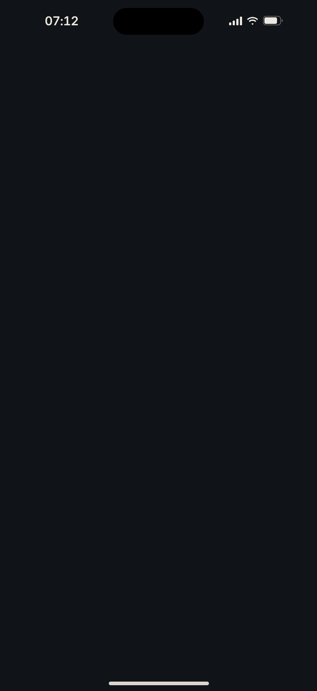
Shot 1· 0 ms
The eye opens
The lit graphite, nothing else. One point of light in the middle of the dark, breathing; the room’s light breathes in round it. The camera is far and a little high, looking down into a room it cannot see yet.
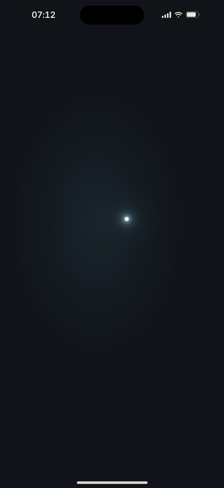
Shot 2· 500 ms
The scan
A sphere of light grows out of the eye and samples the room as it passes: the desk first, then the shelf and the calendar, the back wall, the ceiling last. The front is a step brighter than what it leaves settled behind it. The camera begins a slow dolly in.
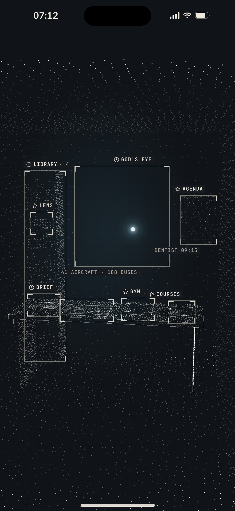
Shot 3· 1.10 s
The edges, the things
The hairline edges draw themselves a step behind the front. Each thing locks into its reticle the moment the front reaches it, with its tag: the Brief, the book, the Gym, Courses, the Library, the Lens, the Agenda, God’s eye. The city outside the window is still dark.
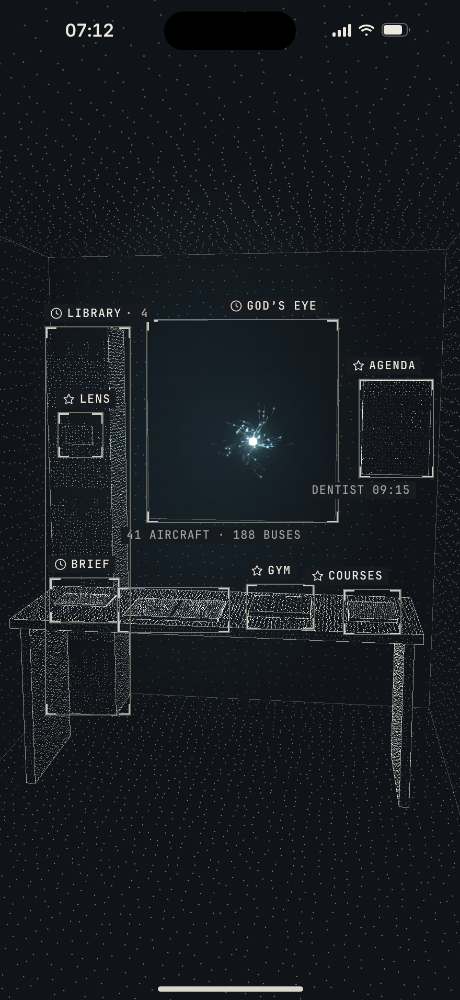
Shot 4· 2 s
The orb forms
His library’s points drift out of the eye and gather into the constellation, each leaving a short trail; the sweep passes down through them; the sphere resolves from the inside out, the meridians catch the light one after another, the rim closes last. The camera lands on Home’s own view at 3.9 s.
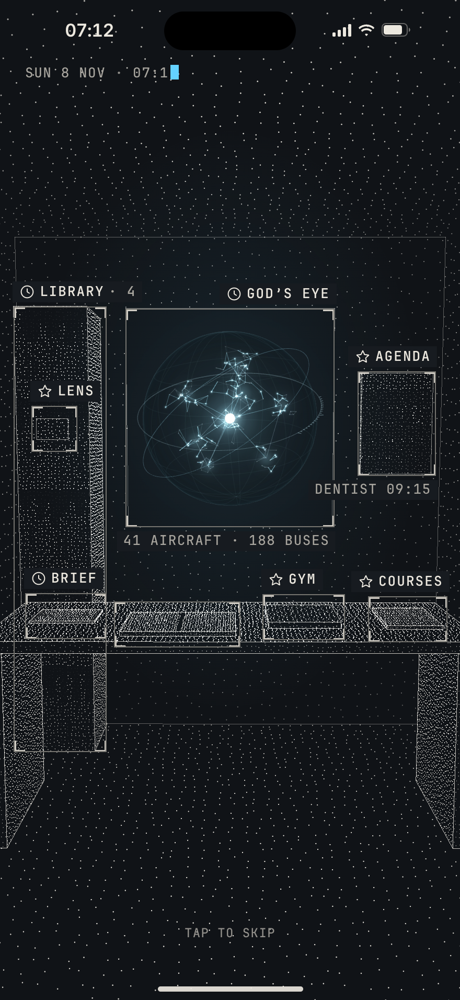
Shot 5· 3.10 s
The stamp
The Machine’s point of view types itself at the top with the block cursor: SUN 8 NOV · 07:12 · BIRMINGHAM · CHECKING FEEDS. Ten milliseconds a character.
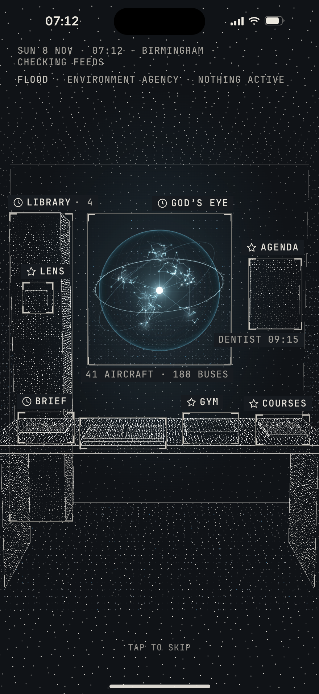
Shot 6· 4 s
The feeds answer
One truth line each, a beat apart: FLOOD · ENVIRONMENT AGENCY · NOTHING ACTIVE; WEATHER · MET OFFICE · NO WARNINGS; CRIME · POLICE.UK · SEP · 14 WITHIN A MILE. Birmingham lights up outside the window as they answer; the stamp becomes WATCHING 3 FEEDS.
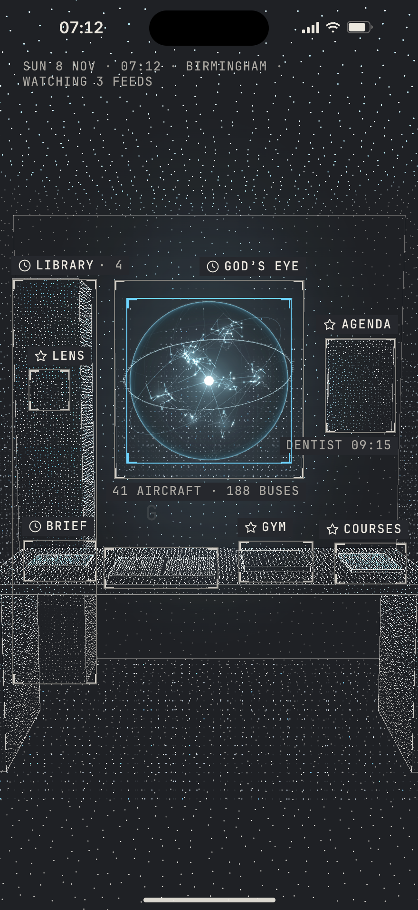
Shot 7· 4.90 s
The recognition
The box snaps onto the orb from 14 px wider, closing over 160 ms in his colour. A wave of his colour passes once through every point of the room from the eye outward and is gone in 700 ms; the screen lifts 7 % for one frame. G H O S T Y arrives under the box letter by letter. The feeds’ lines leave; the stamp holds their truth.
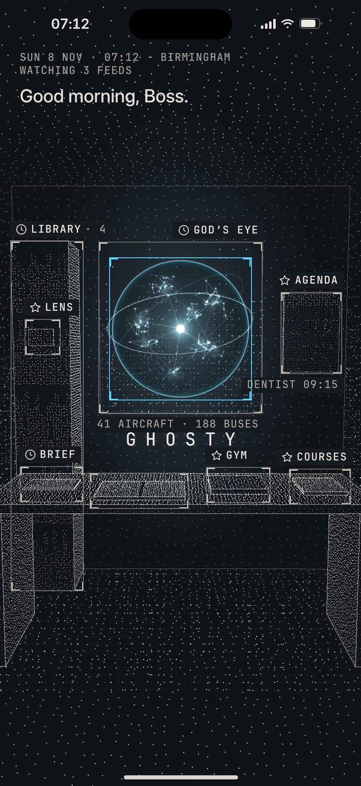
Shot 8· 5.40 s
The greeting, then Now
Good morning, Boss. rises under the stamp where Home’s first line lives; the orb opens half way and keeps time with the words. Then the search: the box checks the shelf, the desk, and locks on this morning’s Brief; the leader draws itself to the callout; the callout rises.
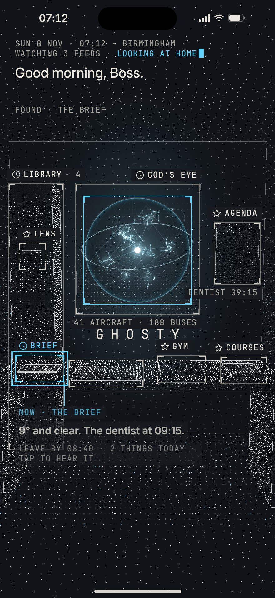
Shot 9· 6.50 s
The landing
The box and the name go; the stamp gains LOOKING AT HOME; the house and the ask line slide up a beat later; the second line arrives. Home is usable at 7.0 s and breathes: the camera drifts six millimetres, the points breathe, one is re-read now and then, the city flickers.
2 · Home, raised, and three places
home.mp4 is the evening Home alive for four seconds. Each place is decided on the phone (his saved places and its own sense of place), said on the screen in one line, never sent to the brain, and off by one switch.
Round one · evening
The base: the raymarched room, one moment, the orb in the middle.
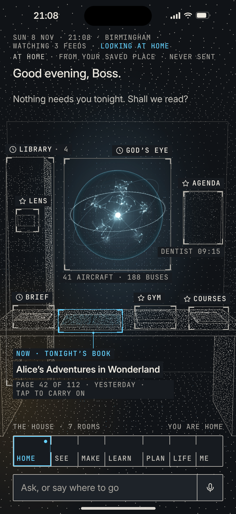
AT HOME · 21:08
The same room as points in real 3-D: the lamp’s warm light low on the left, the city cool through the window, the desk deeper, the book lit. At home from his saved place.
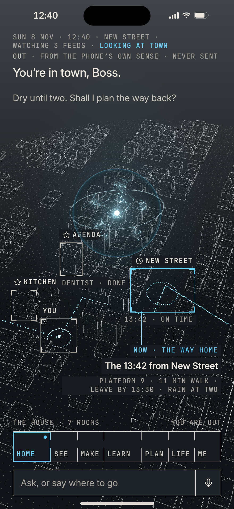
OUT · 12:40 in town
Not a room: the city as the Machine keeps it (W1’s own Birmingham, now as points), from above in daylight; where he stands ringed, the walk to New Street dotted in his colour, the station locked; Now is the 13:42. Out, from the phone’s own sense of place.
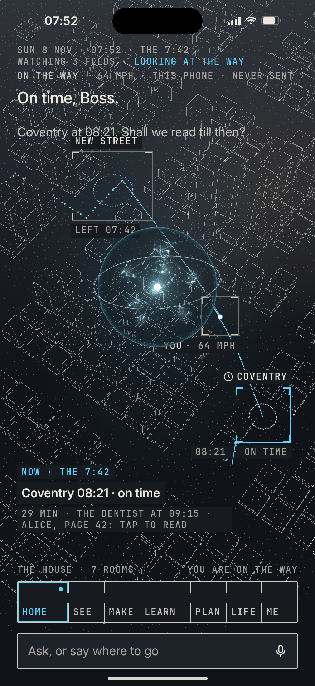
ON THE WAY · 07:52
The same city at dawn, the camera higher and turned to the line: New Street left behind, the train a lit point on the line with its trail, Coventry locked; Now is the journey. On the way, at 64 mph, from the phone alone.
3 · The looks as a gallery, and two HUDs side by side
A theme is a whole HUD, prebuilt (157); the only thing he changes is the colour.
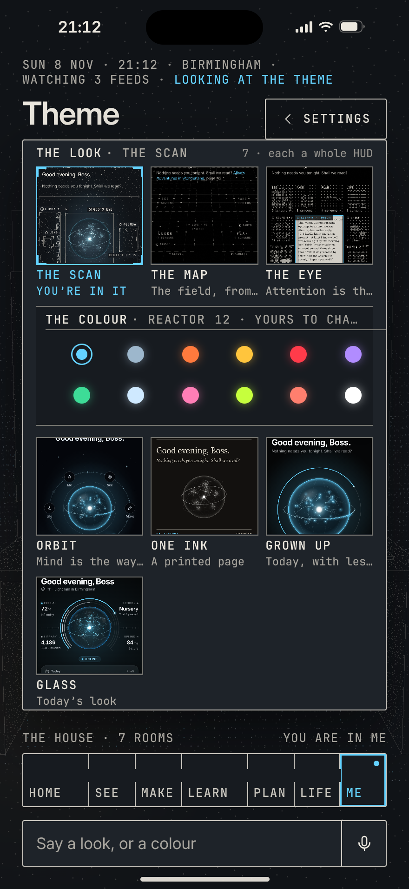
The Theme page as a gallery
Seven looks, each a live thumbnail of its own Home; the colour row under the chosen one; nothing else.
THE SCAN · Home
The room.
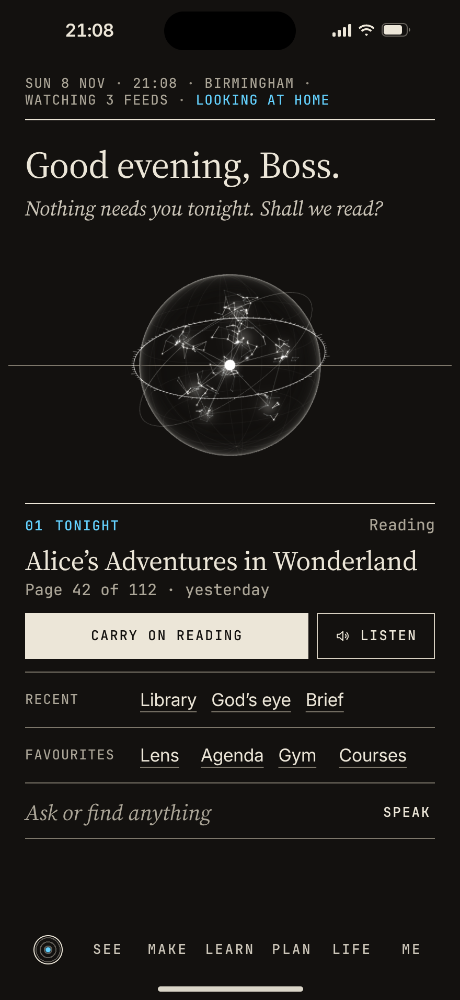
ONE INK · Home
A printed page: bone ink on warm black, a serif for my voice, rules instead of boxes, the orb in ink, the rooms as a running foot. The same facts, an entirely different HUD.